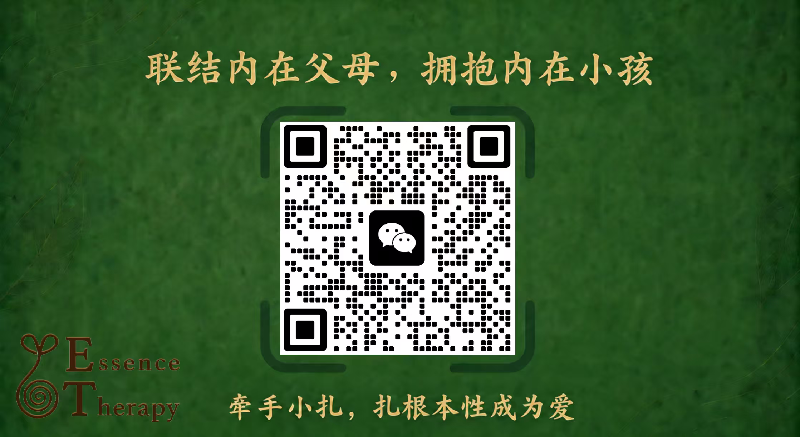

PRINTEMPS 2027 / FORMATION
Thérapie du Moi essentiel · Niveau I
Commencez par les sensations physiques et comprenez la méthode de base du thérapie du Moi essentiel.
thérapie du Moi essentiel · Mise en route
La formation en bref
En partant de la perspective intégrée de la psychologie transpersonnelle, en utilisant les sensations corporelles comme entrée, vous pouvez apprendre à identifier l'espace intérieur et à comprendre le travail intérieur de l'enfant et les ressources intérieures des parents.
Qui est apte à étudier
Les apprenants qui espèrent connaître thérapie du Moi essentiel systématiquement ; Les partenaires qui s'occupent de conseils psychologiques, d'éducation ou d'autres activités d'aide peuvent également établir un langage méthodologique commun dès le premier niveau.
Ce qu'il faut apprendre pendant le cours
- Comprendre la perspective de la psychologie transpersonnelle et l'approche intégrative du thérapie du Moi essentiel.
- En partant des sensations physiques, identifiez les réactions émotionnelles actuelles et les différents espaces intérieurs.
- Comprendre les méthodes de travail de l'enfant intérieur et apprendre à connecter et ancrer les ressources intérieures du parent.
- Grâce à des démonstrations sur site et des exercices de groupe, comprenez les processus fondamentaux du thérapie du Moi essentiel.
style d'apprentissage
Michel Claeys Animation sur site, combinant enseignement de méthode, démonstration et pratique de groupe ; apprendre les sensations corporelles, les ressources intérieures de l'enfant et du parent.
objectifs d'apprentissage
Établir une capacité préliminaire à identifier les sensations corporelles et l'espace intérieur, et comprendre thérapie du Moi essentiel comment passer de l'expérience au travail.
Que puis-je apprendre ensuite ?
After the first level, you can continue to read the original work of Michel Claeys based on the learning objectives, and understand the arrangements for the second level, travail sur les rêves or practice supervision.
Œuvres connexes : La thérapie du Moi essentiel (《由心咨询》) ↗COURSE POSTER
Voir l'affiche du cours
Les dates, lieux et tarifs des cours sont disponibles sur l'affiche. Lors de votre inscription, veuillez contacter Xiao Zha pour confirmer le lieu précis et l'horaire des cours.
Ouvrez l'image de l'affiche originale ↗
ENQUIRY & REGISTRATION
Cours de conseil et inscription
Scannez le code QR WeChat pour contacter Xiao Zha et expliquez les cours que vous souhaitez connaître. Vous pouvez en outre confirmer la base d'apprentissage, le lieu du cours, le quota et la méthode d'inscription.
Retour à tous les cours ↗